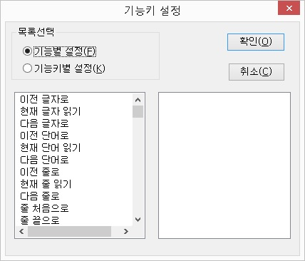

기능키는 센스리더의 세부기능을 간편하게 실행하기 위한 별도의 키조합을 의미합니다.
센스리더에서는 미리 중요한 기능에 대해 기능키를 지정해 놓았으나, 사용자가 자신에 맞게 변경을 원하거나 기능키가 할당되지 않은 기능에 대해 기능키를 설정하고자 한다면 사용자가 직접 기능키 설정을 해 주어야 합니다.
센스리더의 기능키들은 크게 마우스를 중심으로한 기능, 캐럿을 중심으로한 기능, 그 외의 여러 가지 기능들로 구성되어 있습니다.
기능키를 설정할 때는 다음 사항에 유의해야 합니다.
① 기능키는 Ctrl, Shift, Alt, Insert와 다른 키들을 조합하는 형태로 지정합니다.
(예: ctrl-a, ctrl-shift-b, ctrl-alt-shift-c, Insert-t, alt-shift-q)
② 글자키는 다른 키들과 조합해서만 기능키로 등록할 수 있습니다.
즉, 'a'는 등록할 수 없고 <shift-a> 역시 등록할 수 없습니다. 반면에, <ctrl-a>, <alt-a> 혹은 <Insert-a>는 등록할 수 있습니다.
③ 숫자판의 키들은 numlock이 off로 설정되어 있을 때만 기능키로 동작합니다.
④ Ctrl, Alt, Shift, Insert 키들은 단독으로 등록할수 없습니다.
기능별 설정은 기능을 중심으로 기능키를 정의하는 것이며, 기능에 대해 기능키를 추가하거나 삭제, 삽입, 변경할 수 있는 기능입니다.
기능별 설정에서는 한 기능에 여러 개의 키를 동시에 등록하여 사용할 수도 있으며, 기능키 설정 대화상자에서 '기능별 설정' 라디오버튼을 선택하면 기능목록이 출력됩니다.

기능이 표시된 목록에서 원하는 기능을 선택하고 다음과 같이 기능키를 등록합니다.
① 원하는 기능목록에서 탭키를 눌러 기능키 설정 목록으로 이동합니다.
② 팝업키를 눌러 메뉴를 엽니다. 메뉴는 삽입, 삭제, 변경, 추가 등의 항목들로 구성됩니다.
추가에서 <Enter>를 칩니다.
③ "추가할 키를 눌러 주십시오"라는 음성메세지가 출력됩니다. 원하는 키를 누릅니다. (여기서 정상적으로 등록할 수 없는 키조합이면 경고음을 내고 기능키 리스트 목록으로 돌아갑니다.)
* 참고로, 같은 기능에 동일한 키를 두 번 등록할 수 없습니다. 이 경우 에러 대화상자가 출력됩니다. 또한, 다른 기능에 동일한 키를 등록하려고 할 때는 경고대화상자가 표시되며, 등록할 것인지 여부를 확인해 주어야 합니다.
④ 추가된 기능키 목록에서 스페이스바를 눌러 모드를 선택합니다.
* 각 기능키들은 '커서 모드', '뷰 모드', '전체 모드' 중 하나의 모드를 갖는데, 읽기 포인터를 중심으로 한 기능들은 기본값으로 뷰모드로 설정되고, 캐럿을 중심으로 한 기능들은 기본값으로 '커서 모드'가 설정되며, 그외의 기능은 전체모드(뷰모드와 커서모드에서 동일하게 사용)로
등록이 됩니다.
⑤ 기능키 추가/설정이 끝나면 반드시 '확인' 버튼을 선택하여 적용을 하도록 합니다.
① '기능키 설정' 메뉴를 선택하여 설정 대화상자를 엽니다.
② '기능별 설정' 라디오버튼에 포커스를 맞추고 <Tab> 키를 눌러 기능목록으로 이동합니다.
③ 기능목록에서 방향키를 이용해 원하는 기능에 위치하고, <Tab> 키를 눌러 기능키목록으로 이동합니다.
④ 삭제하고 싶은 기능키를 선택하고 <DEL>키 혹은 <POPUP>키를 눌러 삭제를 선택합니다.
⑤ 질문에 <Y>를 선택합니다.
⑥ <Tab> 키를 눌러 '확인' 버튼을 클릭합니다.
① '기능키 설정' 메뉴를 선택하여 설정 대화상자를 엽니다.
② '기능별 설정' 라디오버튼에 포커스를 맞추고 <Tab> 키를 눌러 기능목록으로 이동합니다.
③ 기능목록에서 방향키를 이용해 원하는 기능에 위치하고, <Tab> 키를 눌러 기능키목록으로 이동합니다.
④ 변경하고 싶은 기능키를 선택합니다.
⑤ 팝업키를 눌러 [변경]을 선택합니다.
⑥ <추가>와 같은 방법으로 키를 다시 지정합니다.
⑦ <Tab> 키를 눌러 '확인' 버튼을 클릭합니다.
기능키를 삽입하려면, 기능키 추가와 동일한 방법의 과정을 수행하면 됩니다.
단, 삽입은 기능키 리스트 목록의 현재 위치 앞에 기능키의 순서가 오게 됩니다.
기능키별 설정은 지정된 기능키에 기능들을 추가하거나 삭제, 삽입, 변경할수 있는 기능입니다. 기능키별 설정은 기능키를 중심으로 기능을 정의합니다.
① '기능키 설정' 메뉴를 실행하여 '기능키 설정' 대화상자를 엽니다.
② '기능키별 설정' 라디오버튼을 선택합니다.
③ <Tab> 키를 눌러 기능키목록으로 이동한 뒤, 방향키를 이용해 원하는 목록에 위치합니다.
④ <Tab> 키를 눌러 기능 표시 목록으로 이동합니다.
⑤ 팝업키를 눌러 메뉴를 연 다음, 메뉴항목 중 [추가]를 실행합니다.
⑥ 원하는 기능을 목록에서 선택한 다음 엔터키를 누릅니다.
⑦ '확인' 버튼을 찾아 엔터키를 누릅니다.
* 삭제는 기능별 설정과 동일하게 기능키별 설정을 선택하고 기능 목록에서 <DEL> 키나 팝업키를 누른 후 [삭제] 항목을 클릭합니다. 변경과 삽입은 추가 기능과 유사합니다.
한 키에 여러 개의 기능들이 등록되어 있으면 기능 목록의 순서에 따라 차례로 동작하게 됩니다.
예를들면, '키패드 왼쪽 화살표' 키에 이전글자로, 현재줄읽기가 등록되어 있다면 이전글자로를 먼저 수행한 후 현재줄 읽기를 수행합니다.
① 바꾸고자 하는 기능 목록으로 이동합니다.
② <ALT-아래 화살표키> 혹은 <ALT-위화살표>를 눌러 현재 위치에서 아래 혹은 위로 순서를 바꿉니다.
③ '확인' 버튼을 눌러 변경사항을 적용합니다.